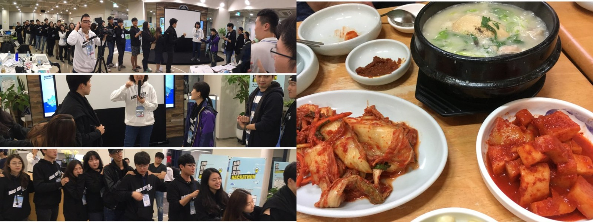
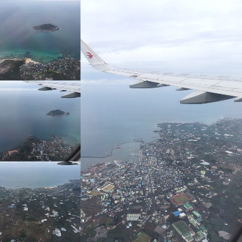
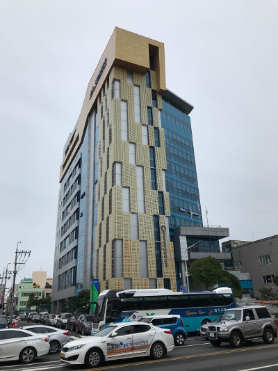
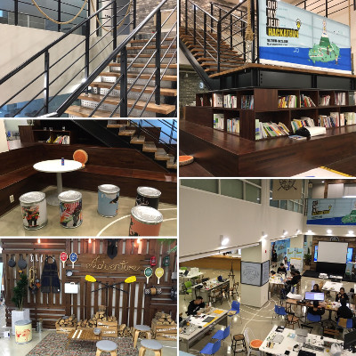
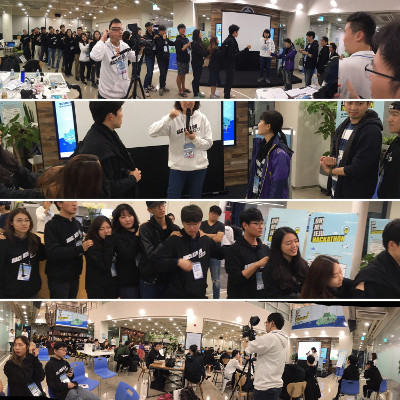
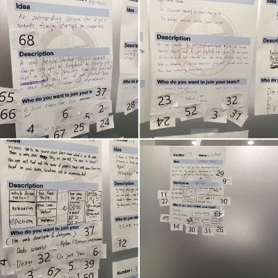
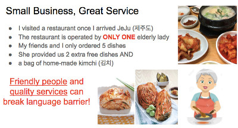
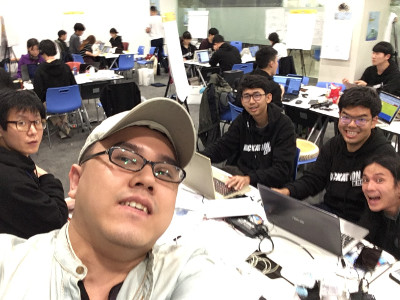

Yes, I travelled to JeJu, South Korea. We couldn’t book a direct flight, and there were serious flight delay, we were forced to sleep at Shanghai airport. After 24 hours of travelling, we finally arrive JeJu, South Korea.

We arrived at 3pm. We immediately started the on-the-ground research because we were extremely hungry. We spotted a very nice restaurant near our competition venue. The restaurant is solely operated by an elderly Korean woman (i.e. she is the only chef and the only waitress. In addition, she cleans up the whole restaurant and washes all the dishes!).
She treated us nicely. We only ordered 5 dishes plus some Kimchi dishes. She gave us 2 FREE dishes. When we left, we received a whole bag of Kimchi as a gift. In my opinion, it is very hard for this small business to survive (Indeed, we stayed there for nearly 2 hours, and we were the only customers at that time).
J-Space is the best co-working space in JeJu, South Korea. Here is the look-and-feel of the building.

The co-working space is located at 3/F and 4/F of the building. The place is really nice. Besides from the open area, the organizers set up some meeting rooms. Work rest areas were prepared and any participant could take a rest if needed. J-Space Facebook page and address: Jeju Venture-maru Bldg. 217, Jungang-ro, Jeju City

After the on-the-ground research, we started the competition at around 5pm on Friday, 21 Oct 2016. We started with some warm up exercises:

It followed by an idea pitching session. Each person was required to write their own ideas on paper. All papers were being sticked on the wall. Each person has 3 votes and only the best 15 ideas could enter the final competitions. That is, only 15 people could be the team leaders of this competitions. All other participants MUST join one of the teams.

Luckily, my idea was being selected as one of the top-15. It is indeed very simple. Based on my on-the-ground research, I found out that many small businesses providing excellent services. Yet, they don’t have budget to promote their nice services.
The idea is to implement a mobile blogging platform for traveller to write great stories about these small businesses. It is a social innovation app, NOT for profit making, but for helping other small businesses.

Finally, I found a team of 5 members (Myself from Hong Kong, 3 from Thailand, and 1 native Korean):
